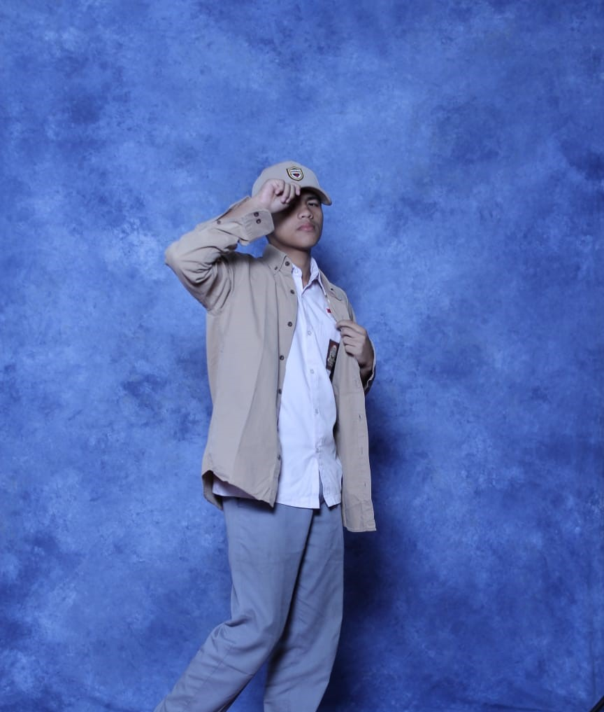

Salman Halim Razak
Hello! I'm Salman Halim Razak Junior Web Developer experience specializing in Full-Stack Web Developer.
Having knowledge in HTML, C, C#, C++, Python.
Education
Bina Nusantara University - Computer Science
June 2024 - Now
- Become a secretary at a school event called "Science Week"
- Student mobilizations in schools every school day
- Evening study program three times a week
Skills
Soft Skills
- Mathematic
- Problem Solving
- Teamwork
- Adaptability
Hard Skills
- Web Development
- Database
- Data Science
- Version Cotrol
- Microsoft Office
Awards
- Gold Medal Winner at OPSI in 2020
- Top 10 finalists at national level at GMM in 2022
Contact Me